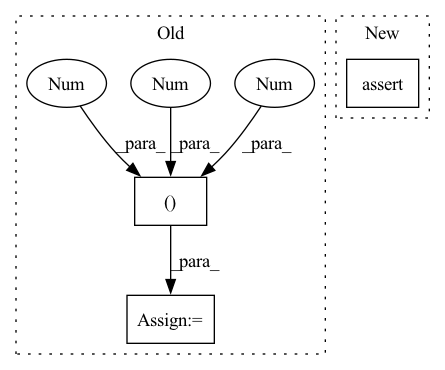

Pattern ID :19516
Before Change
searchspace = NDSSearchSpace(
"/Users/jackturner/work/nds/data/ResNet.json", searchspace="ResNet"
)
data = torch.rand((1 , 3, 32, 32 ))
for _ in range(10):
model = searchspace.sample_random_architecture()
y, _ = model(data)After Change
score = proxy.score(model, minibatch)
t2 = time.time()
assert (t2-t1) < 10.
assert score > 0
In pattern: SUPERPATTERN
Frequency: 4
Non-data size: 3
Instances Fragment ID: 63538121
Project Name: jack-willturner/gymnastics
Commit Name: 4fc66122fd76c42dbed118821adf774e57ce55c6
Time: 2021-08-07
Author: jackwilliamturner@icloud.com
File Name: test/test_proxy_naswot.py
M Class Name: AnonimousClass
N Class Name: AnonimousClass
M Method Name: test_proxy_naswot(0)
N Method Name: test_proxy_naswot(0)
M Parent Class:
N Parent Class:
M File Name: test/test_proxy_naswot.py
N File Name: test/test_proxy_naswot.py
M Start Line: 9
M End Line: 17
N Start Line: 13
N End Line: 32
Before Change
assert isinstance(image_raw, numpy.ndarray)
image_raw = image_raw[:224, :224].astype(numpy.float32) / 255
image_raw = numpy.expand_dims(numpy.transpose(image_raw, (2 , 0, 1 )), 0)
image_raw = numpy.ascontiguousarray(image_raw)
assert image_raw.shape == (1, 3, 224, 224)
assert image_raw.dtype == numpy.float32After Change
assert isinstance(pipeline, CustomTaskPipeline)
assert pipeline.input_schema == object
assert pipeline.output_schema == object
assert pipeline.process_inputs(1.2345) == 1.2345
assert pipeline.process_engine_outputs([1.2345], asdf=True) == [1.2345]
Fragment ID: 63538129
Project Name: neuralmagic/deepsparse
Commit Name: 06c45eb10b3aa6932d8786f34ca3187f760d87ff
Time: 2022-08-05
Author: 109536191+corey-nm@users.noreply.github.com
File Name: tests/deepsparse/pipelines/test_custom_pipeline.py
M Class Name: AnonimousClass
N Class Name: AnonimousClass
M Method Name: test_no_input_call(1)
N Method Name: test_no_input_call(0)
M Parent Class:
N Parent Class:
M File Name: tests/deepsparse/pipelines/test_custom_pipeline.py
N File Name: tests/deepsparse/pipelines/test_custom_pipeline.py
M Start Line: 62
M End Line: 82
N Start Line: 58
N End Line: 67
Before Change
// padding
pad_input = (H % 2 == 1) or (W % 2 == 1)
if pad_input:
x = F.pad(x, (0 , 0, 0, W % 2, 0, H % 2 ))
x0 = x[:, :, 0::2, 0::2, :] // B D H/2 W/2 C
x1 = x[:, :, 1::2, 0::2, :] // B D H/2 W/2 CAfter Change
H, W = self.input_resolution
B, L, C = x.shape
assert L == H * W, "input feature has wrong size"
assert H % 2 == 0 and W % 2 == 0, f"x size ({H}*{W}) are not even."
x = x.view(B, H, W, C) Fragment ID: 63538112
Project Name: bwittmann/transoar
Commit Name: 829a2ecf6cd071bfc222fe830ebca1ed7a9cd8c4
Time: 2021-11-08
Author: bastian.wittmann@tum.de
File Name: transoar/models/backbones/swin_transformer.py
M Class Name: PatchMerging
N Class Name: PatchMerging
M Method Name: forward(2)
N Method Name: forward(2)
M Parent Class: nn.Module
N Parent Class: nn.Module
M File Name: transoar/models/backbones/swin_transformer.py
N File Name: transoar/models/backbones/swin_transformer.py
M Start Line: 292
M End Line: 299
N Start Line: 307
N End Line: 319
Before Change
x1 = centers[0][0]
y1 = centers[0][1]
heatmap = render_target_heatmap_ttfnet((4 ,128,128 ), centers, sizes, indices, mask) * 0.95
heatmap[indices[0],y1,x1] = 1 // make the first point having highest score
heatmap = -torch.log((1 - heatmap) / (heatmap + 1e-8)) // inverse sigmoid, convert probabilities to logits
After Change
out_bbox = output["bboxes"][0][0]
assert out_label == labels[0][0]
assert out_score == 1
assert out_bbox[0] == (x1 + pred_offset[0,0,y1,x1]) * model.output_stride
assert out_bbox[1] == (y1 + pred_offset[0,1,y1,x1]) * model.output_stride Fragment ID: 63538085
Project Name: gau-nernst/centernet-lightning
Commit Name: bde713dbf016e3c26a00307e27cc9eca629776de
Time: 2021-06-19
Author: gau.nernst@yahoo.com.sg
File Name: model_test.py
M Class Name: TestModels
N Class Name: TestModels
M Method Name: test_decode_detections(1)
N Method Name: test_decode_detections(1)
M Parent Class:
N Parent Class:
M File Name: model_test.py
N File Name: model_test.py
M Start Line: 50
M End Line: 82
N Start Line: 58
N End Line: 93